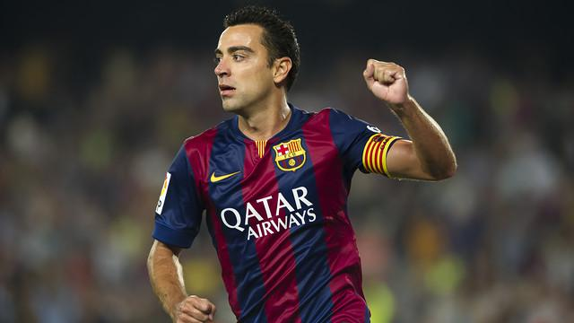
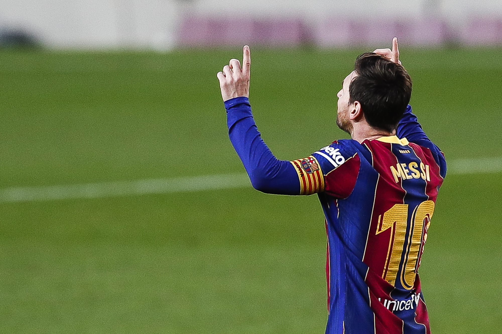
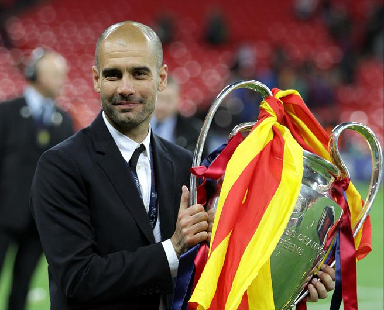

In March 2021, Lionel Messi overtook Xavi's record of 767 games played for the club, and presently has made 778 official appearances in all competitions, while also holding the record for the most appearances in La Liga matches for Barcelona, with 520
Barcelona's all-time highest goalscorer in official competitions is Lionel Messi with 672 goals, surpassing Paulino Alcántara's 369 goals in March 2014, a record which stood for 87 years. In December 2020, Messi also overtook Pelé’s 643 goals for Santos to become the highest official scorer for a single club. Messi is the record goalscorer for Barcelona in European and international club competitions, and the record league scorer with 474 goals in La Liga. Four other players have managed to score over 100 league goals for Barcelona: César Rodríguez (190), Luis Suárez (147), László Kubala (131) and Samuel Eto'o (108). Josep Samitier is the club's highest goalscorer in the Copa del Rey, with 64 goals.
László Kubala holds the La Liga record for most goals scored in one match, with seven goals against Sporting Gijón in 1952. Lionel Messi co-holds the Champions League record with five goals against Bayer Leverkusen in 2012. Eulogio Martínez became Barça's top goalscorer in a cup game, when he scored seven goals against Atlético Madrid in 1957.
Barcelona goalkeepers have won a record number of Zamora trophies (20), with Antoni Ramallets and Víctor Valdés winning a record five each. Valdés had a ratio of 0.832 goals-conceded-per-game, a La Liga record, and he also holds the record for longest period without conceding a goal (896 minutes) in all competitions for Barcelona. Claudio Bravo has the record of best unbeaten start in a season in La Liga history, at 754 minutes.
Barcelona's longest serving manager is Jack Greenwell, with nine years in two spells (1917–1924) and (1931–1933), and Pep Guardiola is the club's most successful manager (14 trophies in 4 years). The most successful Barcelona player is Lionel Messi with 35 trophies, surpassing Andrés Iniesta, with 32 trophies.
Barcelona's Camp Nou is the largest stadium in Europe. The club's highest home attendance was 120,000 in a European Cup quarter-final against Juventus on 3 March 1986. The modernisation of Camp Nou during the 1990s and the introduction of all-seater stands means the record will not be broken for the foreseeable future as the current capacity of the stadium is 99,354.
El Barça de les Cinc Copes is the first team in Spanish football to have won five trophies in a single season (1951–1952). Barcelona is the only club to have played in every season of European competitions since they started in 1955 counting non-UEFA competition Inter-Cities Fairs Cup. On 18 December 2009, alongside being the only Spanish club to achieve a continental treble, Barcelona became the first ever European football team to win six trophies in a calendar year (a sextuple). In January 2018, Barcelona signed Philippe Coutinho from Liverpool for €120 million, the highest transfer fee in club's history. In August 2017, Barcelona player Neymar transferred to Paris Saint-Germain for a world record transfer fee of €222 million.